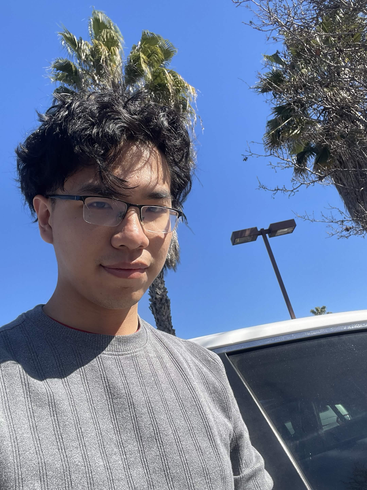

NGUYEN NGUYEN
( HE/HIM )
Portfolio: LINK
About the Artist
Nguyen Nguyen is an Asian American artist based in the Bay Area, majoring in Digital Media Art at San Jose State University. His artistic vision is unique and intriguing in a good way. Taking the "rules of cool" as a compass, he finds interesting ideas in ordinary life, combining them with many visual and thematically appealing elements to create something truly special. Nguyen has less focus on the technological and scientific aspects, such as coding, but instead embraces the boundaries between extreme silliness and awesomeness. He keeps striving for things that are beyond expectations; it could be comedic or philosophical, or even both.
Magic Evolved
"My work appeals more to young people than the older type; I strike a thriving feeling of adrenaline, testosterone, and the masculinity hormone. Just something guys would look at that makes them excited. All of this started from my hobby of fantasy role play games and the amusement of observing mass destruction weapons with magnificent beasts like the dinosaur. I tend to waste time scrolling YouTube shorts while feeling stressed, and one day I actually found a video of a knight riding a motorcycle and jousting with a laser sword while smoking a pack of cigarettes. I just think that is so awesome, and sometimes that is all it takes to inspire an artwork. I use it at a demo for an Indian game I'm making on Unity. I want to focus on the core of artists and game designers and ideas that are revolutionary and visually appealing, with a bit of fun and enjoyable gameplay. As a modern artist, coding and computer drawing are important, but they do not entirely define the artist's traits; they are the core of the art. Just like the knight who is struggling to adapt against his rapidly changing world, we as asterisk also need to adapt to how A.i is affecting us all. Not by fear and rejection, but maybe embrace and use it as our weapon.